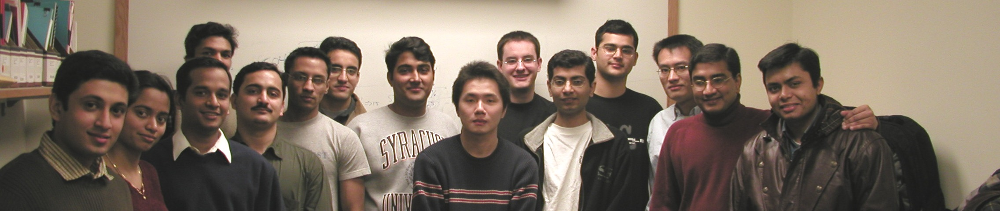

Blog: First Things
opinions, ideas, language features
"Old posts gather dust,
yet sometimes a stranger finds
wisdom in the past."
- ChatGPT
yet sometimes a stranger finds
wisdom in the past."
- ChatGPT

I believe that "Software Developer" is a great job description!
Developers are engineers.
We use interesting technology to build useful products. We're scientists, finding new ways to build and
think about software artifacts in provably better ways.
Developers work in communities. Almost all professional software is built by teams of developers who work together on
products, many of which may have millions of lines of code. That means that several hundred people
collaborate on common construction goals. So software developers need to have the skills to communicate
their specifications, designs, implementations, test results, issues they think are important, and to report
progress and results.
Developers are creative craftsmen and artists. Most programming languages give us great freedom in how we express our design ideas and implement them
in working programs. We can use that freedom to structure code for our fellows as well as for the translators
and machines on which it runs. We want to make our programs elegant and simple, make their intents clear,
and make them quick and reliable.
There is a lot of similarity between software source code and literature. Both are created out of mind stuff,
both are constrainded by syntax and convention and the realities of their context, and both capture a specific implementation of some concept.
For a program that is an operational concept the program follows to define it's tasks and operations. For literature that is the plot
line its narrative follows to construct a story. Both literature and software source code benefit greatly from well-formed concept and a swift editorial
red pencil.
Software technology is gloriously chaotic - constantly growing, shedding old idioms, adopting new ideas and paradigms.
It concerns itself with: the artifacts of machines, languages and their translation, tools for packaging
and maintaining big complex systems, and other tools to abstract and visualize meaning hidden within clusters of files and
machines.
Much of the functionality of modern life is driven by software, and as we learn to succeed building complex products
to support that, we're asked to accept ever larger construction tasks that tax our abilities to understand and create
these things.
In these pages I intend to engage, with you, thoughts about all of these aspects of our job description: the technology and science of
building software, the affects and affectations of community, and most often comment on examples of the art and craftsmanship of our profession.
"This page is dedicated to the many graduate students I've had the good fortune to know. Thank you all, every one."
- Jim Fawcett
Initial Thoughts: